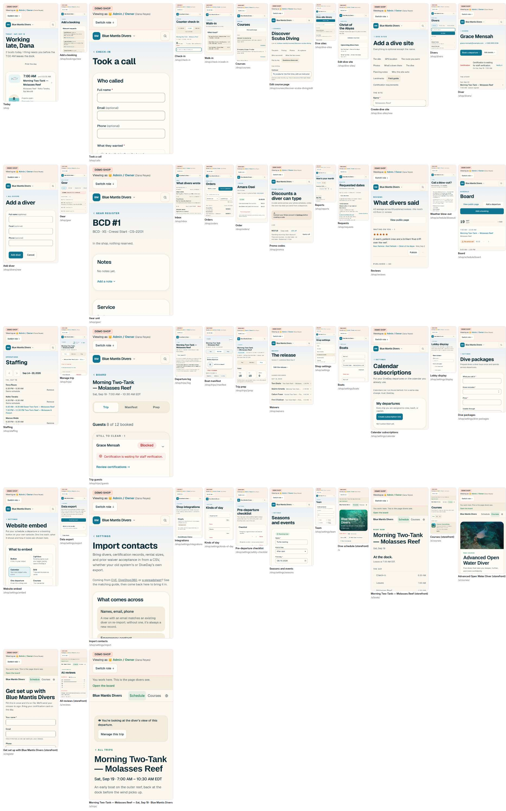

The owner's read after round 2: "You're still not thinking big enough. The way our current design looks in its entirety, top-down, needs complete rethinking." He is right, and the reason is on this page. Every canvas so far — fifteen of them, this brief's two rounds included — took the app's skeleton as given: pages of rows under a nav of nouns, a title, a list, a chevron, a button. Then it argued about the clothes. An Apple product is not a skin on a database. It is one idea about the thing itself: Weather is the sky, Wallet is the cards, Maps is the map, Fitness is the rings, Clock is the clock. The chrome disappears because the thing is legible on its own. So this round starts from what DiveDay is, not from what it looks like: below, the entire app on one sheet, then three whole products, each built on one physical thing a dive shop already thinks in — the day, the boat, the sea — drawn as finished, and one call.
Three products, not three styles. I · Tide: the app is the day. II · Deck: the app is the boat. III · Chart: the app is the sea. Same shop, same morning, same six screens. Pick the thing, and everything else follows from it.
The premise. Rounds 1 and 2 kept Today · Boats · Divers · Shop and restyled the rows. Here there are no tabs to restyle: each idea decides what the home is, how you get anywhere, and what disappears. H-87's A, B and C are withdrawn, not answered.
H-88 — one numeral: I, II or III. Recommended I · Tide, with the departure drawn as Deck's boat and the site as Chart's chart inside it, because every shop has a day and the day is what the product already knows most about. Nothing ships before the pick.

Each brief was answered at the altitude it was asked. "Make it clean" got a floor; "it's ugly" got a surface; "more Apple-like" got SF Pro and grouped grey. None asked the question Apple asks first, which is not what the app should look like but what the app is. The ledger:
| Canvas | What it kept | What it changed |
|---|---|---|
| Reef (H-64, 09-01) | Pages of rows under a nav of nouns | A palette, a face, a water band, a drawn tile |
| One hand (H-71, 09-08) | The same | Twelve deletions; four directions, five levers, eight more |
| Clear the deck (H-77, 09-11) | The same — six ways to group the nouns, five surfaces, a console | The instrument as a style; a dial between it and Reef |
| Nothing to explain, rounds 1–2 (H-87, 09-18) | The same, on a floor with fewer voices | Three skins — the group, the glass, the figure — and the device's own face |
| One idea (this page) | The rules that are not design: safety, copy, the clock, the zone, Spanish | The skeleton. What the home is, how you move, what a boat and a diver and a day are made of |
The test is one sentence: name the physical thing the app is. If the answer is "a list", the design is not done, whatever it is wearing.
Each idea is a whole product: its own home, its own way to reach anything, its own material, its own thing to tap. Each is drawn on the same fiction as every canvas since Clearwater — Blue Mantis Divers, Key Largo, Thursday, August 27 at 6:40 AM — on the same six screens, so they compare by eye. The boards are beside this cover.
The sky at the top is the shop's own hour; the boats sit on the hours they leave; the tide breathes under them; a line for now. Yesterday and tomorrow are a swipe, the week a pinch. Only Settings has no hour.
Feels like Weather, Calendar, Fitness. Already in the code: the almanac, the tides, the forecast, the season, the day spine. Weakest: a diver with no booking has no hour — the search finds them.
Each hull is an object in its own colour with its seats bow to stern. A seat fills when someone books, turns green when they step aboard, red when they cannot; roll call is tapping seats. The home is today's boats, stacked; the shop is the card at the bottom.
Feels like Wallet, a marina chalkboard. Already in the code: readiness, admission, buddy pairs, the offline manifest. Weakest: a shore shop gets a beach; money and messages are not boat-shaped.
The shop's own water, north up: the dock, the rings, the reef line, the sites where they are, today's boats on their tracks. Tap a site for its briefing and its water; tap a track for the boat. The diver sees the same chart: where we go.
Feels like Maps, Find My, a chartplotter. Already in the code: site coordinates, the drawn route, the tide station, the briefing. Weakest: a shop with one site is an empty sea; the coastline is a decision.
Gone under all three. The nav of nouns — four tabs, More with fifteen under it, the ⌘K box, the six-slot dock. The Trips list, the Board and Today as three places. The departure's four tabs. The Conditions tab. Dark mode as a setting. The chevron row as the unit of the page. The eyebrow, the greeting, the drawn tile, the water band. Each idea replaces them with its own thing, not with a cleaner list.
Untouched under all three. readiness.ts and trip-admission.ts and every safety rule; the roll call's one tap and the after-dive count; the waiver, the card check, the medical flag; copy from the bundle in every locale; the clock and the zone; the storefront's face and the shop's colour; Stripe, the integrations, the exports. A redesign that touched a safety rule would not be a design decision, and none of these does.
Every shop has a day. Not every shop has a hull with seats, and not every shop has six charted sites; a shore shop and a course-heavy shop are ordinary customers, and Tide is the only idea that is whole for all of them.
The day is what DiveDay already knows most about. The almanac, the tide at every site, the marine forecast, the season, the kinds of day, the spine of what is due before lines off — all computed, all filed under a tab. Tide is the surface those facts were waiting for.
It answers the reads. "Light mode should render light" is answered by the sun rather than a toggle; "between an instrument and the existing design" is a sky over paper; "farther from the cutesy" is a chart's discipline with no decoration at all.
It composes, in one direction. The app is the day; on the day are boats; the boats go to places. So under Tide the departure's page is Deck's hull and a site's page is Chart's chart — the picture each thing already is — and nothing from II or III is lost. The reverse is not true: a boat-first app has nowhere to put a Tuesday with no boats.
Slices 23a–23h in the roadmap, each run through the design-implementation skill: the component names the ADR, a test pins the rule and never the pixels, the canvas README's slice table moves, the visual diffs are explained in the PR. The first slice is the picked idea's home; the second is the departure; the third is the storefront's front page; then every remaining area re-hung on the idea, one family per session. Round 2's surface rows (22a, 22b, 22i) land first under any pick, because every idea is drawn on them.
check:repo, check:design-canvases, check:docs.sun-moon.ts, departure-tides.ts, marine-forecast.ts, season.ts, today.ts.boats.capacity, readiness, buddy pairs; one new column, the hull's colour.shops.latitude/longitude, dive_sites.forecast_*, dive-site-route.ts; the coastline is a follow-up ADR.